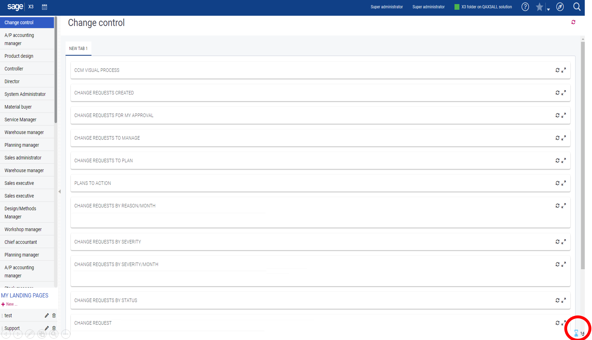
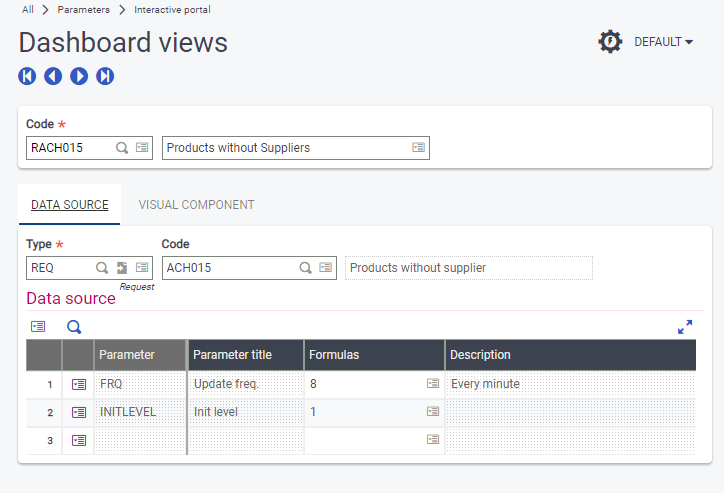
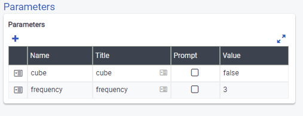
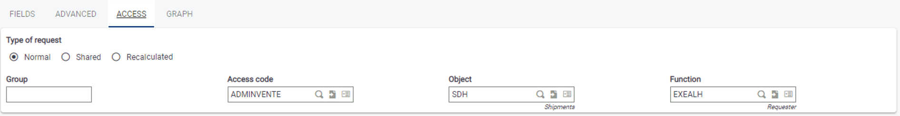
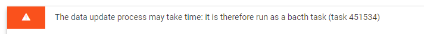

Portal pages performance
Introduction
A Sage X3 portal page can include many components such as:
- visual processes
- queries
- statistics
- external web pages
The different components are loaded simultaneously. For visual processes and statistics, the load time is usually very short. For the queries, it might be longer.
Example of a loading page:

The small sandglass icon displayed at the bottom of the page indicates the number of components are still in loading status.
If the loading time is longer than expected, you should check the different queries present on the page and see if you can improve their performance. You can also set them up differently to have a faster loading time.
Query execution
The query execution principles depend on different parameters. The most sensitive parameters are:
- the query execution frequency
- the query execution cost
The Query name refers to a set-up built in one of the requesters (classic, graphical, SQL). The Parameters grid gives lists of values for some parameters. The most important are the following:
- Portview refers to a portal view setup (called Dashboard views in the menu):

The important parameter shown above is the update frequency. In this example, the query is executed when the page displays that its last execution happened more than a minute ago.
This is acceptable for a small request. But in many cases, a daily or monthly frequency could be enough to get relevant data with a limited consumption. - Other parameters can be given in the menu item. The frequency parameter can be given directly in the menu item. The portview parameter would then become useless. The difference between the two options is that in the menu item, you have to give a constant value while in the portal view. It can be a formula by using, for example, a user parameter value that would be created for this purpose:

### Note In this case, do not display the label associated to the value. You have to refer to the correspondance table hereunder:
The values 1, 7, 8, 9, and even 2 should be used cautiously, especially if the query is heavy to execute.Value Time before recalculation 1 Always recalculated 2 Hour 3 Day 4 Week 5 Month 6 Never recalculated 7 Every 10 minutes 8 Every minute 9 Every 10 seconds
Query definition
The first point to take into account is the type of request.

- A normal request is executed per user. This means that if two users enter in the same portal, the request is likely to be executed twice. This is useful if the criteria given in the report depends on the user, for example, if you have a condition such as FIELD=GUSER.
- A shared request is preferable, because a user will benefit from a calculation already done by another user.
- A recalculated request should be avoided as much as possible because it executes every time it is displayed.
By setting the previous parameters correctly, you should:
- avoid unnecessary computation of queries
- display a previous result when possible
Query calculation cost
When a query must be executed, a rough estimation of the cost is done before the execution. To gain time, the estimation is only based on the number of lines in the main table of the report. The main table is the table from where the links can be done.
For example, for a report with 3 levels of details, the table that stores the third level of details is used. The system counts the number of lines in this table and compares it to the value of the SELWARN parameter. If the count exceeds the value, the query is executed in batch and not displayed immediately. In this case, the following message is displayed:

The user will see the result later, when coming back on the page, or by using the refresh key (F5) from the browser.
The SELWARN parameter must be set to a reasonable value. If not set, the value used is 100,000.
This value seems to be reasonable, but sometimes even 100,000 lines can be a very high value. The main attention point should be the filtering criteria that are present in a query. If the conditions are based on comparison operators and a subset of functions, the selection conditions will be sent to the database and the cost won't be too expensive. The functions sent to the database are:
- left$
- right$
- mid$
- seg$
- abs
- toupper
- tolower
- len
- chr$
- find
- ctrans
- pat
Any complex expression that includes only constants is also sent to the database (the constant being evaluated).
Example of a condition not sent to the database
A=log(B), where A and B are columns of the database.
If you have a condition such as:
A=log(2)
log(2) is evaluated and the query becomes A=constant.
If we are in a case where the function cannot be transmitted to the database, all the lines following the conditions that can be sent to the database are returned. Then the additional conditions are computed to perform the final filtering. This becomes of course more expensive.
The worst in terms of performance is when a condition uses a function. In that case, we load a program and execute several lines. If this happens, make sure that you have also added some filters that will limit the number of lines returned.
Some queries supplied by default in the SEED folder are in this case. Make sure you modify them by adding filters before using them. The list of sensitive queries is the following. In bold, the reports concern movements, so use these queries on portal pages very cautiously. You can add very strong filter on dates, for example.
| Query name | Main table | Condition |
|---|---|---|
| ACH015 GPA002 GPA003 NAGPA003 | ITMMASTER | func TRTX2FNC.EXISTS_ITP([F:ITM]ITMREF)=0 |
| ACH038 ACH041 | PRECEIPT | func TRTX2FNC_SYRA.EXISTS_FLUX ([F:FCY]CRY,[F:TCY]CRY,[F:PTH]FFWNUM,[F:PTH]FFWADD) |
| VEN031 | SORDER | ([F:BPC]OSTAUZ-func TRTBPMVT_SYRA.CALOSTCPY(GACTX, [F:SOH]CPY, [F:BPC]BPCRSK, [F:BPC]CHGTYP, date$))<0 |
| VEN051 | SINVOICEV | func TRTX2FNC_SYRA.EXISTS_FLUX ([F:FCY]CRY,[F:TCY]CRY,[F:SIV]FFWNUM,[F:SIV]FFWADD) |
| VEN052 | SINVOICE | [F:SIH]STARPT=2 | ([F:SIH]STARPT=1 & func TRTX2FNC_SYRA.GET_PARAM_NUM(GACTX, CST_ALEVFCY, [F:SIH]FCY, "SIVCFM")=1) |
| VEN061 VEN062 | SDELIVERY | func TRTX2FNC_SYRA.EXISTS_FLUX ([F:FCY]CRY,[F:TCY]CRY,[F:SDH]FFWNUM,[F:SDH]FFWADD) |